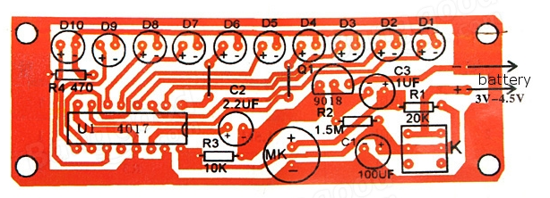
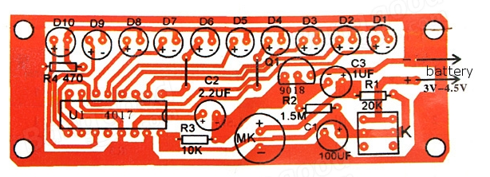
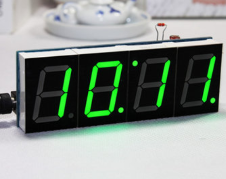
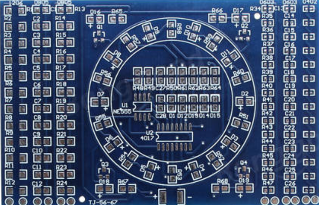

Soldering | Bluetooth Low Energy (BLE)
Soldering

Soldering is essential to what we do in Advanced Digital Fabrication as a way to join components together. We have used a breadboard to this point, however soldering allows us to make our electronic circuits more permanent. Soldering is joining two or more components together by using a filler material with a lower melting point. This is much different than welding where you are physically melting the two pieces being joined.
Soldering Is Easy Comic Book
Learning Through Hole Soldering
Assignments

 

1. Assemble the Voice Controller according to the schematics in the picture. Use the schematics to place the electronic components where they belong on the circuit.
- A. Include a picture of the finished project
- B. Using the schematic, explain how the voice changer works electronically. Make sure you use the correct electronics terms when describing what is happening in the circuit.

2. Use the schematic of the Clock with Temperature and Light Control to complete the second through hole soldering project. This project is an LCD clock that has a temperature and light sensor. Complete the project by soldering the correct electronic components onto the circuit board and program the clock.
- A. Include a picture of the finished project.
- B. What function does the photoresistor and thermistor play in the circuit board?
- C. What is an intergrated circuit and explain how it works in this electronics project?
3. Surface Mount Soldering is essential for certain applications. We will create a surface mount printed circuit board (PCB) later in class and you will need to be able to solder size 1206 to the circuit board. It takes patience and practice to become good at surface mount soldering. Most places use paste and then bake the part onto the board when surface mount soldering or use a pick and place machine.
- A. Solder a row of 1206, 805,603 and 402 SMD resistors onto the practice board.
- B. Take a picture of your completed board
- C. Discuss how you overcame the frustrations of soldering SMD components.
Back to index